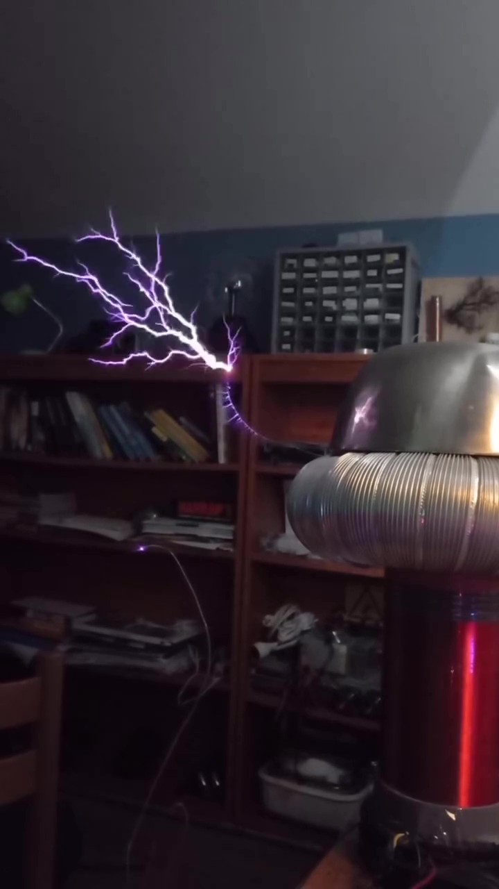
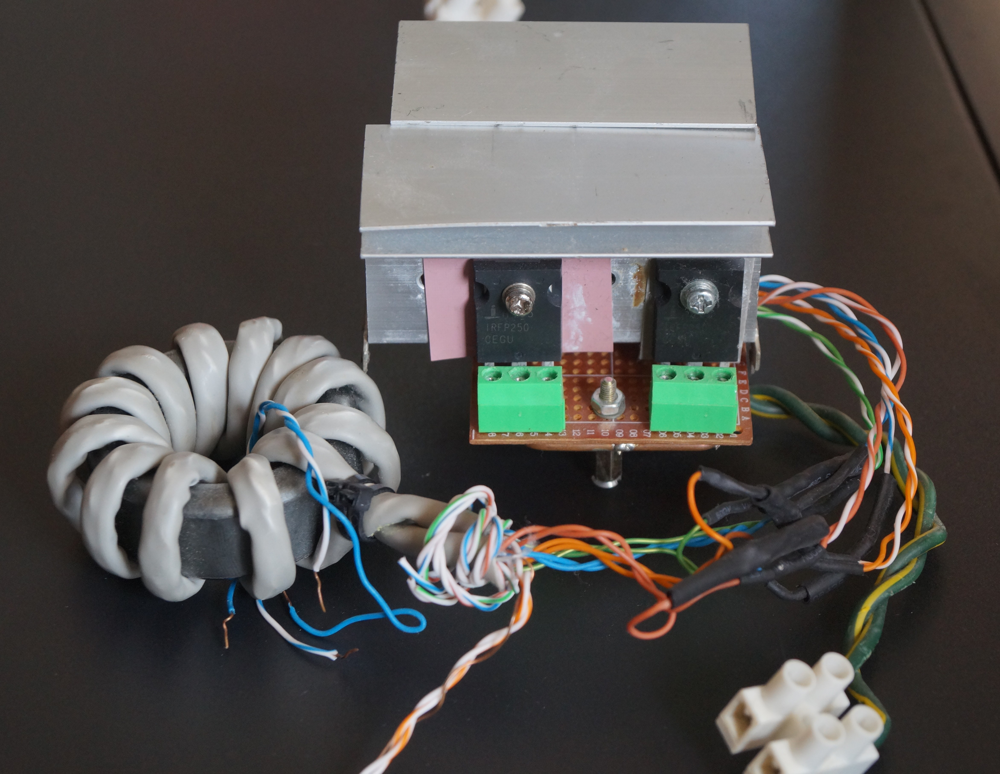
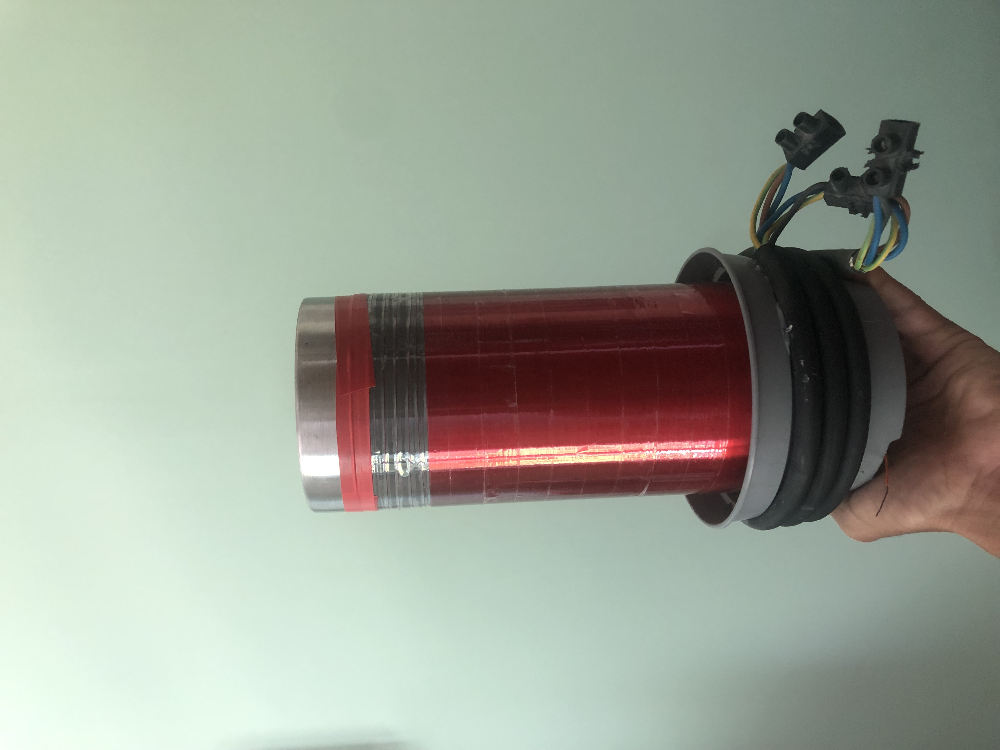
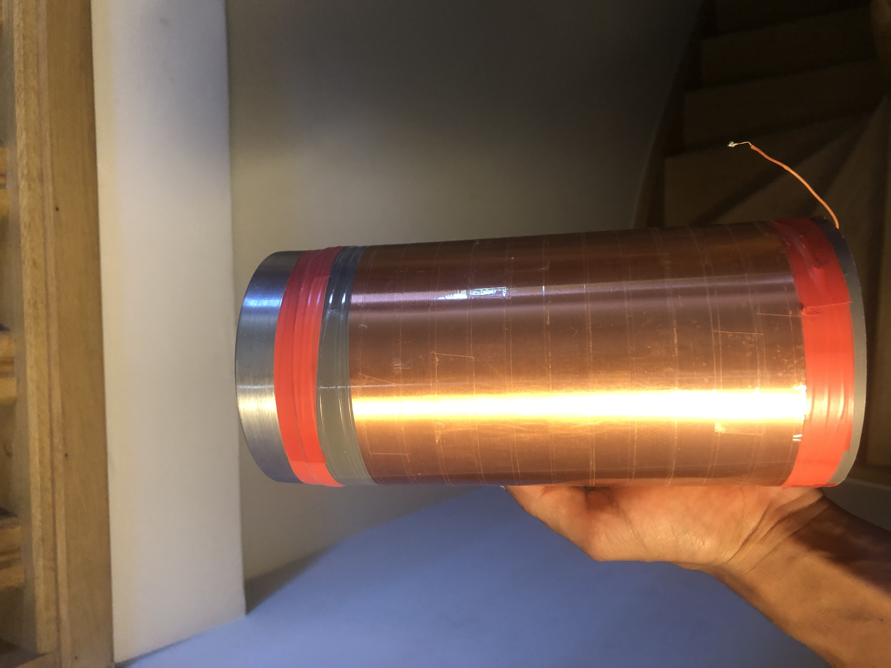
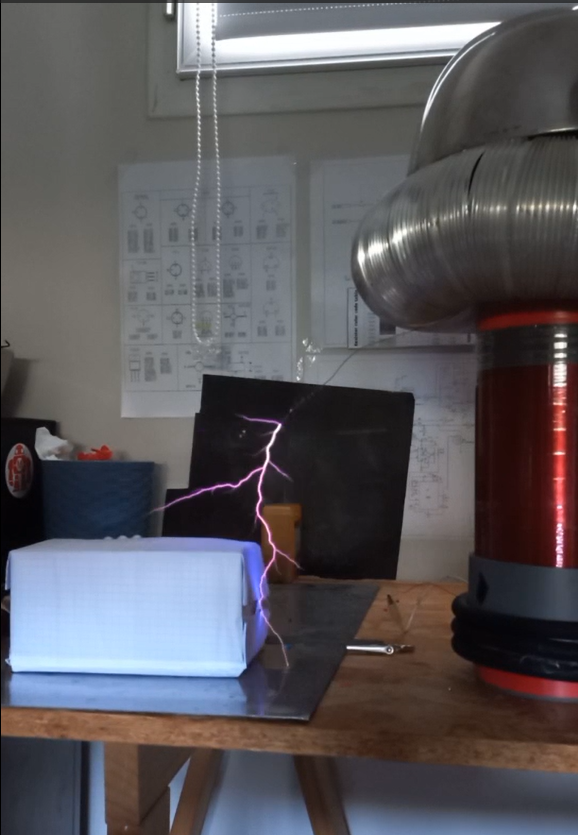
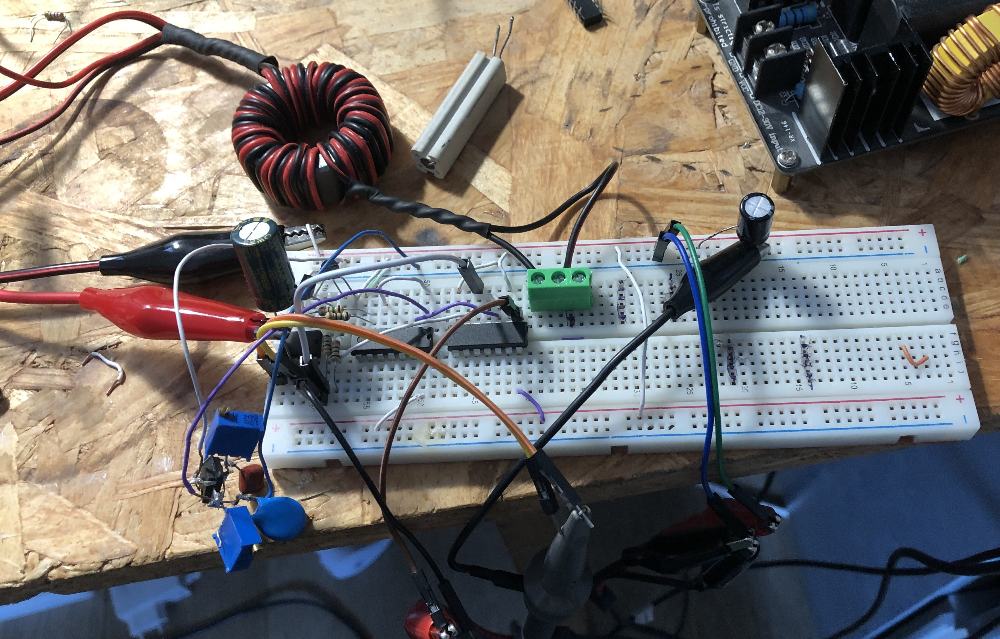
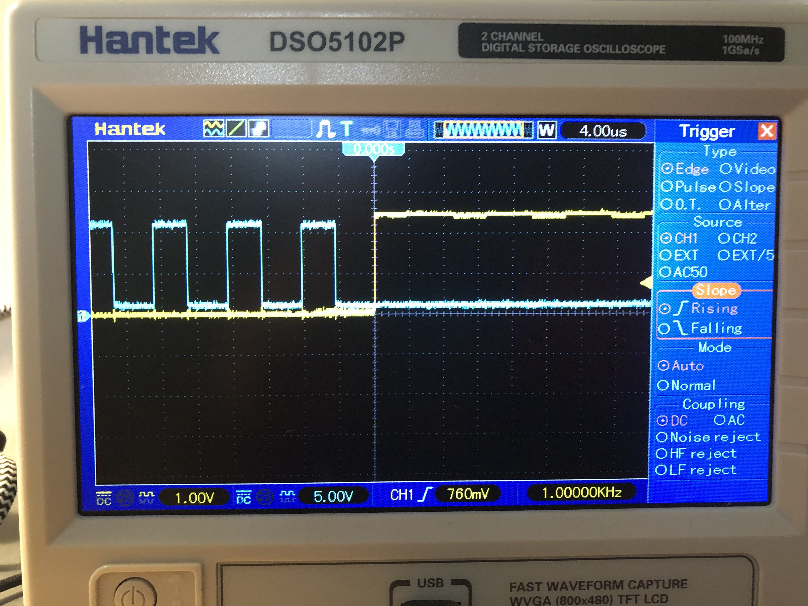

Bobine Tesla SSTC Musicale Moyenne Puissance
Une bobine Tesla à semi-conducteurs modulaire alimentée par un pont en H complet de MOSFETs, avec asservissement par antenne et modulation audio, conçue pour un montage rapide et modulaire.

Vue d'ensemble & Objectifs
Cette bobine Tesla solid state (SSTC) de moyenne puissance est l'aboutissement de recherches menées sur les circuits résonants à découpage. Mes premières itérations reposaient sur une topologie simple de type flyback, avant de migrer vers un hacheur push-pull à point milieu primaire, plus robuste tout en restant basique. Cette configuration offrait des résultats corrects, mais exposait les transistors à des surtensions transitoires de 2x à 3x Vin, limitant sévèrement la tension admissible.
Afin de mieux encaisser les pics de tension et de monter en puissance, cette version adopte un pont en H complet (Full-Bridge) isolé par transformateur d'impulsion de grille (GDT). Les objectifs clés étaient d'atteindre une puissance supérieure à 150W (jusqu'à ~250W), d'intégrer une modulation audio et de garantir une modularité totale permettant d'isoler et de réutiliser le pont, le driver et l'étage audio sur de futurs bancs de test.
Consigne de Sécurité
La haute tension à haute fréquence (RF) engendre des risques de brûlures profondes et de destruction irréversible des équipements de mesure. Le pont de puissance fonctionne sous des tensions de bus redressées mortelles (jusqu'à 170V DC). Ne faites jamais fonctionner le pont sans condensateurs de filtrage et de découplage de bus en place, évitez les boucles de masse lors des branchements d'oscilloscope, et blindez systématiquement la logique basse tension contre les champs électromagnétiques intenses.
Architecture Système & Spécifications
| Paramètre / Sous-système | Spécifications & Détails |
|---|---|
Topologie de Puissance |
Pont en H complet avec rétroaction capacitive par antenne (inspiré de la SSTC 5 de Steve Ward) |
Interrupteurs de Puissance |
4× MOSFETs canal N IRFP250 (200V, crête 55A, boîtier TO-247) |
Tension & Puissance de Service |
120V AC (bus redressé 170V DC) ; consommation ~250W (selon le rapport cyclique) |
Fréquence de Résonance |
~165 kHz (accordée via le topload toroïdal ; résonance à vide ~190 kHz) |
Longueur d'Étincelle |
~25 cm de décharge maximale |
Enroulement Secondaire (Principal) |
975 spires, fil émaillé ~33 AWG issu d'un ventilateur micro-ondes, dimension: 100 × 185 mm |
Enroulement Secondaire (Secondaire) |
1200 spires, fil plus fin, dimension: 100 × 155 mm |
Enroulement Primaire |
6 spires |
Alimentation & Bus DC |
Variac 3kVA + pont redresseur ; condensateur de filtrage 200V 3600µF avec 2× 0,47µF découplage HF |
Choix de Conception
1. Circuit de Commande et Logique
Transformateur d'Impulsion de Grille (GDT) : Pour piloter les interrupteurs du côté haut (high-side), un GDT a été préféré aux drivers intégrés à bootstrap car il n'offre aucune isolation galvanique. Le GDT est bobiné à la main (8 spires) avec du câble ethernet torsadé sur un tore de ferrite récupéré d'une machine à laver. Les 4 secondaires pilotent directement les grilles des MOSFETs via des résistances d'amortissement individuelles de 10Ω. Le primaire est alimenté par une paire complémentaire push-pull (IRF510 / IRF9530) fournissant le courant crête de plusieurs ampères indispensable pour commuter la capacité de grille des IRFP250.
Mécanisme d'Auto-oscillation : Les SSTC doivent impérativement s'adapter à la dérive de fréquence causée par les arcs électriques et la capacité parasite de l'environnement. J’ai donc choisi une boucle de rétroaction avec asservissement par antenne capacitive pour sa simplicité: il exploite le champ électrostatique du secondaire pour auto-entretenir l'oscillation sans générateur externe.


Modulateur audio : Il convertit le signal audio analogique incident en un train d'impulsions modulé en largeur (PWM 1 bit). Un amplificateur opérationnel LM358 sert d'écrêteur demi-onde sur l'entrée Jack 3,5 mm. Cet écrêteur ne disposant pas d'un verrouillage strict du rapport cyclique, la modulation audio est cantonnée à de basses tensions (~50V DC) pour parer tout emballement thermique du pont.

2. Circuit de Puissance
Le Pont en H Complet : Si les IGBT excellent pour les courants crêtes élevés et que les transistors bipolaires (BJT) s'avèrent trop lents avec une forte demande en courant de base, les MOSFETs (IRFP250) concilient vitesse de commutation et marge de courant. Avec un Vds nominal de 200V, la tension de bus reste le point critique. Le choix d'un pont complet par rapport à un demi-pont permet d'appliquer ±VBus aux bornes du primaire (contre seulement ±VBus/2 pour un demi pont), doublant la tension et maximisant la puissance apparente pour une même tension d'alimentation.

Circuit d'Amortissement RC (Snubber) : Les commutations ultra-rapides sur les inductances parasites des pistes provoquent d'intenses surtensions inductives au blocage. Un snubber RC (condensateur de 4,7nF en série avec une résistance non inductive de 4,3Ω 3W) est raccordé en parallèle aux bornes du primaire afin d'absorber ces pics de tensions et préserver les MOSFETs.
Alimentations Auxiliaires et Principale : La logique de commande et le driver de grille sont alimentés par des alimentations de laboratoire isolées multivoies (5V pour la logique, 12V pour l'étage driver). L'étage haute tension est fourni par un Variac 3kVA alimentant un pont redresseur de puissance, un condensateur de lissage électrolytique de 3600µF 200V, et deux condensateurs de découplage plastique 0,47µF haute fréquence.
Disposition & Fabrication
Secondaire, Topload & Primaire
Bobinage du Secondaire : Le résonateur principal compte 975 spires de fil émaillé ~33 AWG bobiné sur un tube PVC de 100 mm de diamètre via un banc motorisé à variateur de vitesse. Le bobinage a ensuite été protégé par une couches de scotch. L'extrémité inférieure est reliée à la terre RF tandis que le sommet rejoint le topload via le cylindre métallique.


Optimisation du Topload : Initialement constitué de deux demi-sphères métalliques, le topload a été remplacé par un tore en gaine d'aluminium flexible surmonté d'un dôme métalliques. Cette capacité accrue a abaissé la fréquence de résonance de ~180 kHz à ~165 kHz, réduisant drastiquement les pertes de commutation des MOSFETs, soulageant le circuit de commande des grilles et générant un champ électrique suffisant pour éclairer une lampe de bureau (led) à plus d'un mètre.
Géométrie du Primaire : Un câble souple multibrin à 6 conducteurs pour plaque à induction a été configuré en un primaire solénoïdal de 6 spires autour d'un support en plastique. Les essais ont mis en évidence qu'un bobinage à 3 spires induisait des surtensions excessives et un fort courant à vide, alors que 6 spires offrent le compromis parfait entre inductance, coefficient de couplage et pertes par effet de peau.

Intégration & Blindage Électromagnétique (EMI)
Pont Ultra-Compact : L'intégralité du pont en H a été compactée sur une plaque PCB perforée de 7×5 cm à l'aide de borniers à vis facilitant le remplacement des MOSFETs. La longueur des liaisons de puissance a été réduite au strict minimum pour minimiser l'inductance de boucle. Les quatre MOSFETs sont montés deux par deux sur des dissipateurs en aluminium et refroidis par un ventilateur axial de 10 cm.

Intégration Driver et Blindage : Pour minimiser l'inductance des pistes et éviter un déphasage qui serait néfaste à la commutation douce, le feedback et le driver ont été intégrés sur une plaque pcb perforée unique de 3×7 cm. Les liaisons de signaux critiques reliant l'interrupteur et le driver de grille ont été enveloppées d'un blindage en feuille d'aluminium relié à la masse afin de stopper toute auto-perturbation induite par les arcs.
Prototypage & Résolution de Pannes
-
Défaut d'Amorçage de l'Auto-oscillation
Lors de la mise sous tension ou à faible tension de bus, la bobine refusait régulièrement d'amorcer l'oscillation, la boucle de rétroaction n'ayant aucun signal initial à amplifier. Le système restait inerte jusqu'à ce qu'un signal parasite aléatoire vienne déclencher la chaîne de commande.
Solution TechniqueLe fil de sortie du modulateur a été torsadé autour de l'antenne réceptrice. À chaque front montant du train d'impulsions, le couplage capacitif injecte une pichenette de tension dans l'antenne, ce qui lance instantanément la résonance de manière parfaitement fiable. -
Oscillations Parasites de Grille et Dépassement Inductif
Les premières observations à l'oscilloscope sous une alimentation isolée de 48V ont révélé un violent phénomène de « ringing » (rebonds) aux bornes des grilles flirtant dangereusement avec la tension critique absolue Vgs max (±20V) des IRFP250. Ce problème découlait d'une résonance LC entre l'inductance parasite du GDT et la capacité d'entrée des MOSFETs.
Solution TechniqueInsertion de résistances de grille individuelles (damping resistors) de 10Ω au plus près de chaque broche de transistor, lissant les signaux de commande en créneaux propres et parfaitement maîtrisés. -
Distorsion par Effet Miller sous Haute Tension
Dès que la tension de bus dépassait les 100V, un creux/palier prononcé apparaissait au milieu du front montant de grille à l'oscilloscope. La forte variation de tension dV/dt sur le drain réinjectait un courant de déplacement capacitif via la capacité parasite Cgd (effet Miller) dans la commande de grille. Bien que la commutation reste fonctionnelle aux tensions actuelles, une amplification de commande de grille supérieure (>15V) est prévue pour traverser plus vite ce palier lors des futures évolutions.
-
Destruction par Absence de Capacité de Bus
Lors d'un rebranchement rapide sur banc de test, le pont a été mis sous tension directement depuis le Variac et pont de diode sans réinsérer le condensateurs de lissage 3600µF. Dès l'arrêt d'une impulsion du modulateur, l'interruption instantanée du fort courant primaire a contraint l'inductance de fuite du Variac à se décharger sous la forme d'un pic inductif d'amplitude gigantesque, detruisant instantanément les 4 MOSFETs du pont.
Enseignement RetenuLe montage sur borniers modulaires a permis de remplacer le quatuor de transistors sans dessouder. Une capacité de découplage permanente soudée au plus près du pont ainsi que des fusibles ultra-rapides sur le bus DC ont été définitivement intégrés pour neutraliser les surtensions d'alimentation.
Mises à jour & Prochaines Étapes
Lors d’expériences récentes avec des transformateurs à haute tension, le module de pilotage des grilles a connu une défaillance critique. Un rapide diagnostic du circuit montre que la casse était due à l’étage amplificateur.(la paire IRF510 / IRF9530), qui a succombé à une surtension induite.
Plutôt que de reconduire à l'identique un circuit vulnérable, cet incident est l'occasion idéale d'abandonner l'architecture SSTC pour évoluer vers une véritable bobine Tesla à semi-conducteurs à double résonance (DRSSTC). Le pont complet et le primaire existants serviront de socle, mais l'insertion d'un circuit oscillant primaire accordé impose des contraintes nettement plus sévères, exigeant la conception d'un nouveau circuit de commande.
La Transition vers la DRSSTC
Dans une SSTC conventionnelle, le primaire n'est pas résonant : les courants commutés demeurent modérés. Dans une DRSSTC, l'ajout d'un banc de condensateurs primaires (MMC) accorde ce circuit exactement sur la fréquence de résonance du secondaire. Grâce au phénomène de surtension résonante, le courant dans le primaire culmine à plusieurs centaines d'ampères, projetant des arcs bien plus grand avec un échauffement moyen réduit sur le pont.
Néanmoins, commuter des courants crêtes de cet ordre interdit formellement d'interrompre le pont au milieu d'un pic de courant sous peine de destruction immédiate des semi-conducteurs. Ouvrir le circuit en plein passage de plusieurs centaines d'ampères libère une énergie inductive capable d'endommager n'importe quel composant de puissance, quel que soit l'amortisseur présent.
Prototype d'Interrupteur Synchrone
Afin de découper les trains d'impulsions en toute sécurité sans commutation dure (hard-switching), la nouvelle électronique exploite une logique de déclenchement synchrone au passage par zéro du courant (ZCD — Zero-Current Detection), inspirée des travaux de Steve Ward. L'interrupteur ne coupe plus brutalement la commande : il arme la logique, et le pont s'éteint rigoureusement et uniquement lorsque l'onde de courant franchit le potentiel zéro.


Ressources Complémentaires
Calculateur JavaTC
Dimensionnement géométrique, calcul de résonance et modélisation de capacité secondaire
Conception de Snubbers RC (TI)
Note d'application Texas Instruments pour le calcul et l'amortissement des étages de puissance
Steve Ward SSTC
Schémas de référence et notes de conception pour bobines Tesla à asservissement par antenne
Loneoceans Labs
Architectures avancées et documentation détaillée sur les DRSSTC et bobines musicales